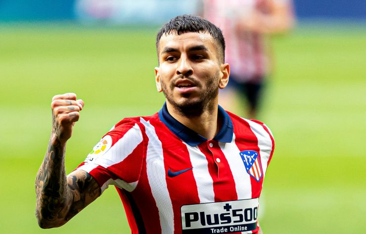
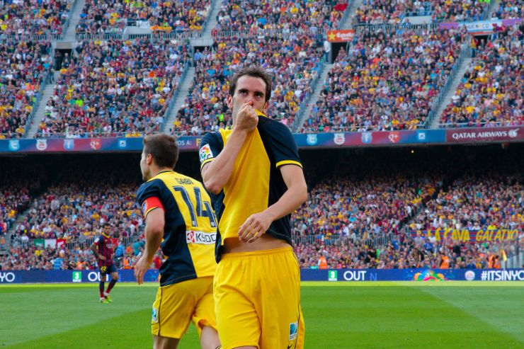

LaLiga
Ángel Correa ha terminado la temporada haciendo lo que mejor sabe: marcar. Ha completado una campaña extraordinaria y ha sido clave para que el Atlético de Madrid se alzase con el título de campeón de LaLiga Santander 2020/21. El actual campeón, ha liderado la clasificación durante buena parte de la temporada y ha finalizado la competición como el equipo que menos goles ha encajado, con 25 tantos en contra y el segundo que más consiguió, los mismos que el Real Madrid y sólo superado por el FC Barcelona. En este sentido, ha tenido vital importancia el ‘10’ del equipo madrileño, que despidió la temporada de la mejor forma posible, con una diana en el último encuentro disputado.
Esta campaña que acaba de llegar a su fin ha sido la más goleadora del delantero argentino desde que recaló en el conjunto madrileño, con nueve tantos y otros ocho pases de gol concedidos, lo que hace un total del 25% de participación en los 67 goles que ha hecho el equipo. El último de ellos, en la jornada 38 de LaLiga Santander, en la que no sólo marcó uno de los dos goles de la victoria frente al Real Valladolid, sino que fue clave en la consecución del título de LaLiga Santander para su equipo.
A pesar de que se adelantó el equipo local en la primera mitad con un tanto de Óscar Plano, los del ‘Cholo’ Simeone no desistieron en la idea de avanzar hacia la portería rival y obtuvieron su premio en el minuto 57 del partido, en el que Ángel Correa logró poner tablas en el marcador con un auténtico golazo. Recibió el balón en la frontal, recortó a jugadores que salían a su paso por ambos lados y ejecutó, con mucha precisión, un disparo lejano ajustado al palo de la portería que defiende Masip. Diez minutos más tarde, Luis Suárez firmó el segundo tanto para el conjunto madrileño y certificó la victoria que vale un título de LaLiga Santander para el conjunto rojiblanco.
La temporada 1995/96 siempre estará en el recuerdo de los aficionados del Atlético de Madrid. Hace 25 años, el conjunto colchonero se citó con su propia historia y la de LaLiga al lograr un doblete de leyenda. Los rojiblancos con Radomir Antic al frente y con futbolistas como Kiko Narváez, Milinko Pantic o el propio ‘Cholo’ Simeone, entre otros, consiguieron una hazaña histórica. El argentino, actual técnico colchonero, entra en el club selecto de aquellos profesionales que saben lo que es conseguir un título de LaLiga Santander como futbolista y entrenador.
El Atlético de Madrid firmó una temporada soberbia sumando 87 puntos, después de 26 partidos ganados, nueve empates y siete derrotas ¡Un año sin duda difícil de olvidar!
Hacía años que el Atlético de Madrid no se codeaba con los más grandes en el fútbol español. No obstante, la llegada del ‘Cholo’ Simeone cambió el rumbo del equipo, hasta convertirlo en el club que es, actualmente, campeón de LaLiga Santander.
